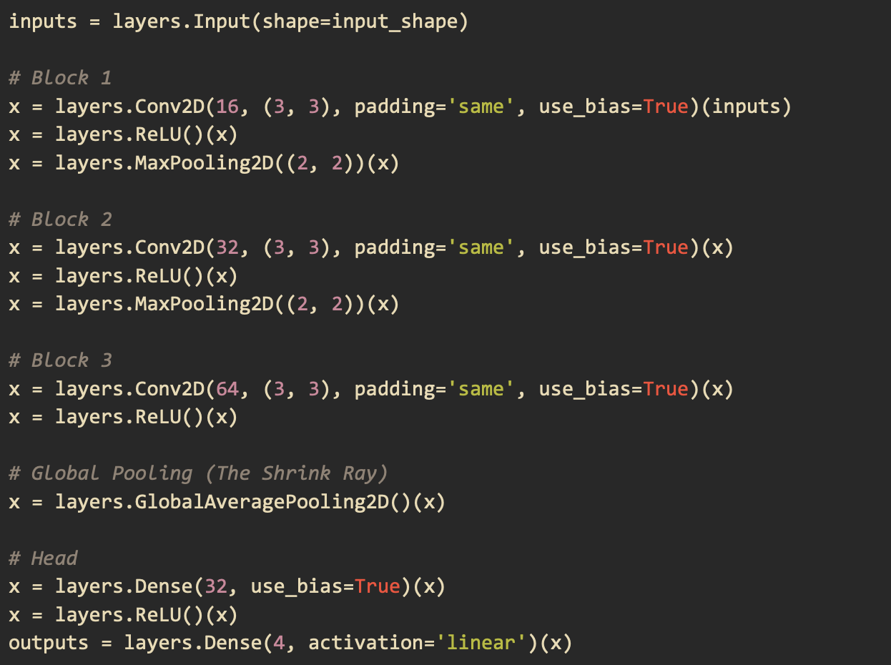

Program & Hardware Design¶
Dummy Head¶

WAV File¶
The WAV file format was selected for audio storage primarily due to its robust support and ease of integration within the project workflow. Its advantages include straightforward playback compatibility with standard media players (like Apple Music or Windows Media Player) and seamless integration with analysis tools like Audacity. Most crucially for the project’s development, the WAV format is efficiently handled by Python’s scientific ecosystem, particularly via the scipy.io.wavfile library, which provides a simple and reliable interface for reading audio data directly into NumPy arrays—a format ideal for immediate processing by TensorFlow models.
For mono audio, samples are arranged in sequential order (i.e. the first 16 bits is the first sample, the second 16 bits is the second sample, …, the nth 16 bits is the nth sample). For stereo audio, the layout for the samples is the interleaving of the first and second channel’s samples.
Channel 0’s sample 0 |
Channel 1’s sample 0 |
Channel 0’s sample 1 |
Channel 1’s sample 1 |
… |
Channel 0’s sample n |
Channel 1’s sample n |
Microphone Input¶
The microphone we used for this project is the Adafruit MAX9814 which has a frequency range of 20 to 20000 Hz. The MAX9814 is an amplifier which is set to 60 dB by default. The Attack/Release ratio was 1:4000 by default and was kept as such. The only 3 pins connected to the RP2040 were the 3.3 V, GND, and OUT.
ADC Reading for 2 channels¶
To emulate the binaural system, two microphones are required to be read simultaneously for input values. However, the RP2040 only has one ADC unit. Fortunately, it comes with a four channel multiplexer which can be used to simultaneously read multiple GPIO pins at once. GPIO pin 26 (physical pin 31) was mapped to ADC channel 0 and connected to the left ear. GPIO pin 27 (physical pin 32) was mapped to ADC channel 1 and connected to the right ear. A timer interrupt was configured to run every 23 microseconds (us) or 44.1 kHz. This timer interrupt is where the ADC read for each of the channels is triggered. They return unsigned 16-bit integer (uint16_t) values.
Ring buffer and FatFS (file handling) and SD card write¶
Two buffers of type uint16_t are used to hold audio samples captured from the ADC 0 and ADC 1. They are both circular buffers which means values are overwritten. Therefore, any processing for the audio samples needs to be done before they are gone.
For external storage, a 16 Gb SD card and an Adafruit SD card reader were used. The RP2040 was programmed to communicate with the SD card reader via SPI.
{kind=link}
microSD Card Reader Pin Connection from ECE4760 Example Library¶
Interfacing with the SD card was done in software via the FatFs library. On startup, the SD card is initialized and the filesystem is mounted using FatFS. A new file is opened for each new recording.
Metadata for each recording includes: sound primitive recorded with, azimuthal angle, and polar angle.
Ex. dtmf_5_0_corrected.wav
In the example file name above, dtmf is the sound primitive used, 5 is the indexing of the dummy head’s polar orientation, and 0 is the indexing of the dummy head’s azimuthal orientation. The indexings encoded the angle values and made it more convenient for the data acquisition and classification processes.
In a dedicated thread, the ring buffer for each channel is popped and written to the opened file in the WAV format described above. Since WAV does not support unsigned 16-bit integer values, the popped data are first converted to signed 16-bit. An index checker was programmed into the ring buffer pop function so as to not write the same value more than once into the file. The file is closed when each test is finished. This is manually done via a serial interface.
Synthesizing sound primitives¶
Below are sound primitives we synthesized using Audacity. There are nine in total but only five of them are audible through the playback system we set up.

A Linear Frequency Sweep from 200 to 1400 Hz in 5 Seconds (Audible)¶

A Linear Frequency Sweep from 200 to 10000 Hz in 1 Second (Audible)¶

Pluck (Audible)¶

Dual-tone multi-frequency (DTMF) (Audible)¶

100 Hz Risset Drum (Not audible)¶
Clap (Not audible)¶

Square Wave (Not audible)¶
Snap (Not audible)¶
The amplifier used was a Rogue G10, voiced for the guitar’s mid-focused range (250 Hz to 4 kHz). It is possible that the amplifier’s limited frequency range is the reason for why certain sound primitives were produced with low fidelity. The ones that were not audible all have a high degree of transient in the mid frequency range or very sparse frequency distribution.
All the primitives synthesized were first exported as WAV files. However, to make reading from the SD card easier on the RP2040, all the files were converted into txt files with raw samples using a Python script we wrote.
Audio output & SD card read¶
Reading SD card was done to get the audio samples of the sound primitives for playback. Initially, we naively followed the same approach we did for the audio capture which is to have an intermediate data structure (i.e. the ring buffer) to facilitate simultaneous reading and writing data (the adc read and the file writing). This failed and the audio came out of the DAC full with artifacts. We learned that this was because audio was not being read quickly enough from the SD card to do audio playback at the sample rate we set (44.1 kHz). Although recording is input-driven which means samples arrive when hardware generates them, playback is output-driven and samples must be delivered at a clock rate which in our case is 44.1 kHz. In the end, we executed the SD card read and SPI write in chronological order, reading as many samples from the primitives’ wav file as the RP2040 allowed and trigger SPI write once reading was done. The limit we found for the read was about 50000 samples, corresponding to roughly 1.1 second worth of audio time.
During the process of truncating the 16-bit samples into the 12-bit payload for SPI transfer, we observed that using a regular stereo speaker found in the lab did not produce the sound primitives at a good enough volume even when the knob was turned to max. We then decided to make use of a guitar amplifier and was able to produce a significantly louder sound with good quality.
The DAC used is a 12-bit MCP4822 DAC, connected via an SPI interface to the RP2040 microcontroller (MCU). For the SPI communication, three connection lines have to be established between the MCU and the DAC. Since SPI is a synchronous communication protocol, the clock has to be shared between the devices. This is done via the SCK line, connecting the MCU GPIO pin 6 to pin 3 of the DAC. Although this setup is a one to one connection, SPI can, in theory, facilitate multi-sender and receiver topology. This is the reason for the CS line which is how the host chooses which external device to communicate with. The MCU GPIO pin 5 is connected to pin 2 (CS) of the DAC. Lastly, for the actual data transfer, the MOSI line is used to exchange serial data between the devices. The MCU GPIO pin 7 (MOSI) is connected to pin 4 of the DAC. The MCU GPIO pins 5, 6, and 7 correspond to the physics pins 7, 9, and 10 of the Pico MCU respectively. The other 3 pins that needed to be connected are the Voltage input (VDD), GND, and LDAC. The DAC VDD is supplied with a 3.3V coming from the MCU with GND. The LDAC pin is so that the DAC can buffer new data while the output holds the old value.

MCU and MCP4822 SPI Connection (Courtesy of Professor V. Hunter Adams)¶
MCP4822 Pins (Courtesy of Professor V. Hunter Adams)¶
The analog output of the DAC is then accessible from the VOUTA and VOUTB pins of the DAC. A 3.5 mm audio socket which has two pins for analog audio input and one pin for ground. The analog audio input is in the form of a voltage signal. For simplicity, only one channel was used for output in this setup. The audio jack supports aux connection which allows for audio connection with the Amp we used.
Serial Interface for program control (3-5 sentences)¶
To properly control the setup (i.e. start/stop/name the recording and choose the primitive for playback), we dedicated the other core for taking serial input. With the SWD debugger, print statements can also be shown to express the state of the program. We designated three characters ‘p’, ‘d’, and ‘u’ as classifiers. We used ‘p’ to start a new recording. This also triggers additional inputs for choosing the sound primitive encoded in numbers (1 for “sine_16.txt”, 2 for “pluck.txt”, etc.) as well as inputs for the azimuthal and polar indexing the head is currently oriented as. We used ‘d’ to stop the recording and close the files currently opened as well as resetting the necessary variables to zero. The ‘u’ is simply to unmount the SD card when we are ready to remove it from the reader.
Calculating the ITD from collected data¶
When the ITD was calculated from the data, there was an oscillating pattern with respect to the horizontal axis, but it was reversed. The ITD calculated from a straight-ahead sound source was higher than when the head was shifted 90 degrees. This result suggests that the ITD can be valuable in discerning where a sound came from, however, it could not be used directly in our setup. The convolutional neural net can account for this using the time difference (horizontal shift) of shapes in the spectrogram. One possible reason for this confusion is a small difference in audio recording latency between the left and right channels that shifts the time difference such that they line up when they should differ and vice versa.
Data Pre-processing¶
Before thinking about building the neural network model, we had to determine what kind of input we wanted to feed the model. With the data set as it is, one option is to directly use the audio time series as the input. We broke the audio recordings into 1.1 second chunks and designated each of the chunks as an input to the model. With sample rate being 44100 Hz, each 1.1 second chunk corresponds to 97020 samples for stereo. This large input inspired us to think about ways to make it smaller while still preserving perceptually relevant information. We thought back to Direct Digital Synthesis (DDS) and realized that frequency, controlled by the phase accumulator, determines pitch which is the defining characteristic of a sound while amplitude is nothing but how loud the sound is. We then took a different approach where we applied Fourier transform (FT) on the time series to extract the frequency information of our data.
Specifically, we applied a short-time Fourier transform (STFT) on our data. STFT breaks the whole signal into smaller windows and applies FT on each of the windows. Below is our configuration for the STFT function used in librosa

Applying the librosa stft function and calculating the power spectrogram¶
The first parameter is the 1.1 second audio chunk for one of our two channels in time series. The second parameter is the size of the FFT window which we set to be 4096. The third parameter is how big of a jump between the start of one window and that of the next window. The fourth is the windowing function which we chose to be “hann.” We set center to False so that every window begins at t * hop_length
By applying the STFT transformation, the input is now a 2D vector of dimension 2049 by 87 which is 178263 data points. The input is now almost twice as large as the 1.1 second time series in two channels samples. Another issue we realized is that human hearing is actually not linear. In other words, the way we perceive a sound going from 100 Hz to 200 Hz is different from a sound going from 1000 Hz to 1100 Hz. The two pitches at the higher frequency will sound like they are closer together than the ones at the lower frequencies. This is because human’s hearing is logarithmic. Therefore, the linear spectrum alone is not yet sufficient as a perceptually correct input for building our HRTF model. To produce a logarithmic spectrogram, we used the melspectrogram function in librosa which produces a Mel spectrogram. The melspectrogram function takes a power spectrum as an input because it aims to capture the energy distribution across frequency bands. The first step was to convert the STFT spectrum to a power spectrum by taking the absolute value of every data point and square them. The power spectrum is then passed in the librosa melspectrogram function with the sampling rate (44100) and the number of mel bands (32) as parameters. The final Mel spectrogram is of dimension 32 by 87 which has 2784 data points. On top of extracting the Mel spectrogram for each of the channels, we also take the difference between the channels’ spectrograms as it correlates with the Interaural Level Difference (ILD), effectively producing a third spectrogram. The reason for this is because we observed that not only was there a time offset between the two received waveforms when a sound came from a non-midline direction but there was also a difference in sound intensity. In other words, for each 1.1 seconds audio chunk, there are three 32 by 87 matrices, corresponding to 8352 data points. This final form of input is not only more perceptually accurate but also smaller in dimension as well.

Model Architecture and Training¶
The model architecture we used was references from different examples online such as the TensorFlow blog and the example from pico-tflmicro GitHub repository.
The input of the model was made to match that of the final mel spectrogram matrix that comprises the spectrograms for each individual channel and their difference. There are 3 main layers to the model as shown in the code below. The output layer returns four values which make up two sine and cosine pairs to give us the polar and azimuthal angles.

When we tried to load this model on the RP2040 using the pico-tflmicro library provided by Raspberry Pi, we faced two main problems. The first problem was that LeakyReLU is not an operation that the version of pico-tflmicro we were using supports. The second problem was that when we actually were able to compile the model, we got a Panic from the board debugger saying that we ran out of memory. To solve these problems, we replaced the LeakyReLU operation with a regular ReLU which pico-tflmicro does support. We then removed BatchNormalization as it takes up memory during inference and the degree to which it improves convergence was not significant. We also removed the Dropout operation as its task is to prevent overfitting but our dataset was already very diverse. Below is our final model architecture.
{kind=link}
Running the Model on the RP2040 using pico-tflmicro¶
Once the model was loaded onto the RP2040, our focus shifted to real-time audio capture and processing. We realized that the seamless data-handling provided by Python’s high-level libraries had shielded us from low-level hardware constraints. On the RP2040, we faced a major bottleneck: our training pipeline used float32 precision and 4096-sample FFT windows, but the RP2040’s lack of an FPU made floating-point DSP computationally expensive. Additionally, the CMSIS-DSP library on this hardware is restricted to smaller FFT sizes for efficiency. A move to the RP2350 would have solved these issues with its native FPU and expanded RAM, but due to time constraints, we pivoted to a hybrid architecture where the DSP is performed on a laptop, allowing the RP2040 to focus on inference.